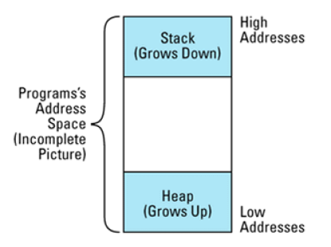

条款27：要求或禁止在堆中产生对象
- 要求在堆中建立对象
为了执行这种限制，你必须找到一种方法禁止以调用“new”以外的其它手段建立对象。非堆对象（non-heap object），在定义它的地方被自动构造，在生存时间结束时自动被释放，所以只要禁止使用隐式的构造函数和析构函数，就可以实现这种限制。
最好让析构函数成为 private，让构造函数成为 public，利用伪析构函数。
class UPNumber {
public:
UPNumber();
UPNumber(int initValue);
UPNumber(double initValue);
UPNumber(const UPNumber& rhs);
// 伪析构函数 (一个const 成员函数， 因为
// 即使是 const对象也能被释放。)
void destroy() const { delete this; }
...
private:
~UPNumber();
};
UPNumber n; //错误，但是当它的析构函数被隐式地调用时，就不合法了
UPNumber *p = new UPNumber; //正确
delete p; //错误! 试图调用private 析构函数正确
p->destroy(); // 正确
另一种方法是把全部的构造函数声明为private
通过限制类的析构函数或构造函数，该方法也禁止了继承和包含
class UPNumber { ... }; // 声明析构函数或构造函数
// 为private
class NonNegativeUPNumber:
public UPNumber { ... }; // 错误! 析构函数或
//构造函数不能编译
class Asset {
private:
UPNumber value;
... // 错误! 析构函数或
//构造函数不能编译
};
解决方法为析构函数声明为protected，构造函数还是public，可以解决继承问题，包含对象的类改为包含对象的指针即可
class UPNumber { ... }; // 声明析构函数为 protected
class NonNegativeUPNumber:
public UPNumber { ... }; // 现在正确了; 派生类
// 能够访问
// protected 成员
class Asset {
public:
Asset(int initValue);
~Asset();
...
private:
UPNumber *value;
};
Asset::Asset(int initValue)
: value(new UPNumber(initValue)) // 正确
{ ... }
Asset::~Asset()
{ value->destroy(); } // 也正确
- 判断一个对象是否在堆中
NonNegativeUPNumber 对象 n中的 UPNumber 部分无法判断是否在堆中
NonNegativeUPNumber *n1 = new NonNegativeUPNumber; // 在堆中
NonNegativeUPNumber n2; //不再堆中
class UPNumber {
public:
// 如果建立一个非堆对象，抛出一个异常
class HeapConstraintViolation {};
static void * operator new(size_t size);
UPNumber();
...
private:
static bool onTheHeap; //在构造函数内，指示
// 对象是否被构造在
... // 堆上
};
// obligatory definition of class static
bool UPNumber::onTheHeap = false;
void *UPNumber::operator new(size_t size)
{
onTheHeap = true;
return ::operator new(size);
}
UPNumber::UPNumber()
{
if (!onTheHeap) {
throw HeapConstraintViolation();
}
proceed with normal construction here;
onTheHeap = false; // 为下一个对象清除标记
}
这样写会出现问题，但是会出现问题
UPNumber *numberArray = new UPNumber[100];
所以 100 个构造函数中只有第一次调用构造函数前把 onTheHeap 设置为 true。当调用第二个构造函数时，会抛出一个异常。
程序的地址空间被做为线性地址管理，程序的栈从地址空间的顶部向下扩展，堆则从底部向上扩展：

// 不正确的尝试，来判断一个地址是否在堆中
bool onHeap(const void *address)
{
char onTheStack; // 局部栈变量
return address < &onTheStack;
}
如果参数 address 的地址小于 onTheStack 的地址，它就不会在栈上，而是肯定在堆上。
但是忘记了还有静态变量啊，一般位于最底部

void allocateSomeObjects()
{
char *pc = new char; // 堆对象: onHeap(pc)
// 将返回 true
char c; // 栈对象: onHeap(&c)
// 将返回 false
static char sc; // 静态对象: onHeap(&sc)
// 将返回 true
...
}
class HeapTracked { // 混合类; 跟踪
public: // 从operator new返回的ptr
class MissingAddress{}; // 异常类，见下面代码
virtual ~HeapTracked() = 0;
static void *operator new(size_t size);
static void operator delete(void *ptr);
bool isOnHeap() const;
private:
typedef const void* RawAddress;
static list<RawAddress> addresses;
};
HeapTracked::~HeapTracked() {}
void * HeapTracked::operator new(size_t size)
{
void *memPtr = ::operator new(size); // 获得内存
addresses.push_front(memPtr); // 把地址放到 list的前端
return memPtr;
}
void HeapTracked::operator delete(void *ptr)
{
//得到一个 "iterator"，用来识别list元素包含的ptr；
//有关细节参见条款35
list<RawAddress>::iterator it =
find(addresses.begin(), addresses.end(), ptr);
if (it != addresses.end()) { // 如果发现一个元素
addresses.erase(it); //则删除该元素
::operator delete(ptr); // 释放内存
} else { // 否则
throw MissingAddress(); // ptr就不是用 operator new
} // 分配的，所以抛出一个异常
}
bool HeapTracked::isOnHeap() const
{
// 得到一个指针，指向*this占据的内存空间的起始处，
// 有关细节参见下面的讨论
const void *rawAddress = dynamic_cast<const void*>(this);
// 在 operator new返回的地址 list中查到指针
list<RawAddress>::iterator it =
find(addresses.begin(), addresses.end(), rawAddress);
return it != addresses.end(); // 返回it是否被找到
}
- 禁止堆对象
三种情况：对象被直接实例化；对象做为派生类的基类被实例化；对象被嵌入到其它对象内。
（1）对象被直接实例化
在类中重新声明operator new，并声明为private
class UPNumber {
private:
static void *operator new(size_t size);
static void operator delete(void *ptr);
...
};
UPNumber n1; // okay
static UPNumber n2; // also okay
UPNumber *p = new UPNumber; // error! attempt to call
// private operator new
（2）对象做为派生类的基类被实例化
继承于上述的类，因为 operator new 和 operator delete 是自动继承的，如果 operator new 和 operator delete 没有在派生类中被声明为 public它们就会继承基类中 private 的版本
class UPNumber { ... }; // 同上
class NonNegativeUPNumber: //假设这个类
public UPNumber { //没有声明 operator new
...
};
NonNegativeUPNumber n1; // 正确
static NonNegativeUPNumber n2; // 也正确
NonNegativeUPNumber *p = // 错误! 试图调用
new NonNegativeUPNumber; // private operator new
（3）对象被嵌入到其它对象内
class Asset {
public:
Asset(int initValue);
...
private:
UPNumber value;
};
Asset *pa = new Asset(100); // 正确, 调用
// Asset::operator new 或
// ::operator new, 不是
// UPNumber::operator new